AI Academy · Level 1 · Grade 6 · Week 27 · Student lesson
Verify Important Outputs
Learn to understand, design, build, test and explain AI systems responsibly.
Project: Helpful Classroom Sorter
Before you start
Week 23: show both a numerator and denominator when reporting a rate.
Plan time to read, investigate and explain. Keep predictions separate from observations.
Student lesson · 1 of 16
Your mission
Your learning target
I can separate an answer into claims and connect each claim to relevant evidence.
I can recalculate quantities with consistent units and a reasonableness check.
I can report supported, contradicted and unresolved claims without inventing missing evidence.
Remember before reading
Close your notes first. A rough first answer helps us choose the right starting point; it is not a score for your ability.
Without opening the old lesson, explain one key idea from Prompts Are Design Instructions. Give an example and a mistake that the idea helps you avoid.
Without opening the old lesson, explain one key idea from Privacy by Choosing Less. Give an example and a mistake that the idea helps you avoid.
Without opening the old lesson, explain one key idea from Good Data, Bad Data. Give an example and a mistake that the idea helps you avoid.
After trying, check the relevant lesson or ask your teacher. Change the part of your explanation that the evidence shows was wrong.
Fluent AI output is not evidence; important claims need independent support.
Learner name:
Readiness for the connected explanation
A response follows the requested four-line format but invents a missing start time. Has it passed the task? Explain.
This week’s end goal
By the end, I can verify quantities with consistent units and separate arithmetic from unsupported claims.
Student lesson · 2 of 16
Notice the evidence
PICTURE STORY
Look Closely Before You Explain
Pictures give clues; evidence tells us what the clues mean.

What do you notice?
Name three visible details without explaining them yet.
Circle the detail most connected to the system's decision.
Name one detail that may be decoration or distraction.
Make a first prediction and state the clue that supports it.
My observations, prediction, and evidence:
A closer explanation
An answer can contain a mixture of correct, incorrect and unverified statements. Checking one sentence does not validate every other sentence. First separate the answer into individual claims. Then ask what evidence would support each one: a record, a measurement, a calculation or some combination.
Our fictional ribbon activity uses current materials card R. R states: four rolls of ribbon, each exactly 2 metres long; twelve pieces will each use 50 centimetres; no cutting loss is included in this paper model. One metre equals 100 centimetres. An old card Q describes a different activity with three rolls. These are provided classroom records, not instructions to cut real materials.
A draft says “R gives four rolls. The starting length is 8 metres. The pieces use 600 metres. Two metres remain. Every participant will enjoy the activity.” Do not approve or reject the whole paragraph at once. Inspect the roll count, starting length, used length, remaining length and enjoyment claim separately.
Student lesson · 3 of 16
See how it works
VISUAL MECHANISM
Input → Process → Output
Follow the information instead of imagining magic inside the machine.
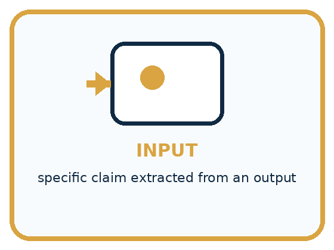
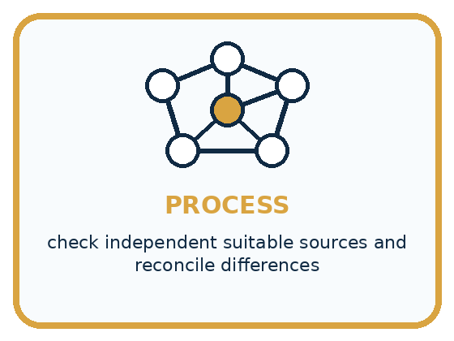
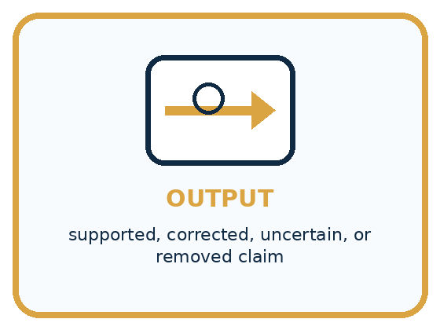
INPUT specific claim extracted from an output
PROCESS check independent suitable sources and reconcile differences
OUTPUT supported, corrected, uncertain, or removed claim
Draw a fresh example with all three stages:
A closer explanation
Different claims need different checks
A citation is useful only if you can locate the source and confirm that it supports the specific claim. The title “Materials card R” beside a paragraph does not make the enjoyment claim part of R. If a cited card Z is not supplied or cannot be found, that citation cannot currently verify its claim. Record the gap rather than inventing Z’s contents.
Check whether the source covers the right activity, version, population or time. Q’s three rolls may be accurate for its own activity but irrelevant to the current four-roll task. In real work, also inspect who created the record, how they obtained the information and whether there is a correction or better source.
Connect the picture and the explanation
Point to the input, the deciding step and the result in this week’s visual. Explain the same step in ordinary words. A picture helps when you can say what each part represents.
Student lesson · 4 of 16
Compare the cases
PICTURE GALLERY
Four Cases, Four Clues
Use the visual cue, then read the evidence carefully.
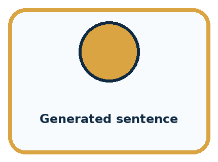
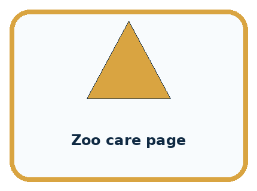
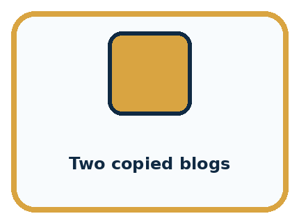
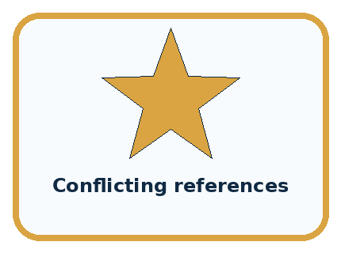
CASE 1 — Generated sentence Clue: fluent output. Meaning: claim, not evidence.
CASE 2 — Zoo care page Clue: direct animal information. Meaning: possible source.
CASE 3 — Two copied blogs Clue: same origin. Meaning: not independent.
CASE 4 — Conflicting references Clue: evidence disagrees. Meaning: report uncertainty.
Which two pictures are easiest to confuse? What evidence separates them?
Change one thing in the pictured case
Change: Make ten bookmarks instead of eight.
Prediction: 100 cm, or 1 m, remains.
Reason: 600−10×50=100 cm.
Student lesson · 5 of 16
Words that unlock the idea
VOCABULARY
Words You Can See and Use
The badge is a memory cue; the definition does the real thinking work.
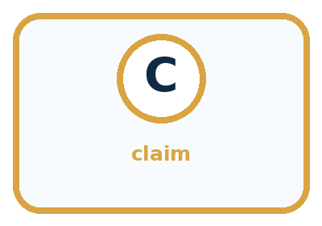
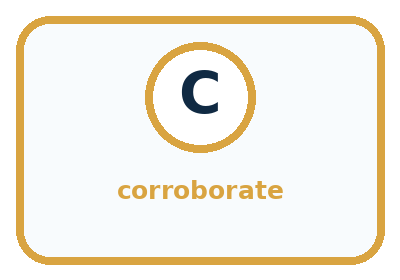
| Word | Meaning | My example |
|---|---|---|
| claim | statement that can be checked | |
| source | origin of evidence | |
| independent | not merely copying the same origin | |
| corroborate | support a claim with separate evidence |
Misconception detective
CLAIM TO REPAIR Professional wording is evidence of accuracy.
Use one vocabulary word and one piece of evidence to repair it:
Words used in the closer explanation
| Word | Meaning |
|---|---|
| Verification | Checking whether a claim is supported by appropriate evidence |
| Citation | A reference that helps a reader locate a source |
| Unit | The agreed measurement scale attached to a quantity, such as centimetres |
| Corroboration | Additional evidence that supports a claim, with its origin checked |
Student lesson · 6 of 16
Follow a worked example
WORKED EXAMPLE
Watch the Reasoning, Not Just the Answer
Every step connects a claim to observable evidence.

STEP 1 — OBSERVE specific claim extracted from an output
STEP 2 — TRACE check independent suitable sources and reconcile differences
STEP 3 — CONCLUDE supported, corrected, uncertain, or removed claim
What new evidence could change this answer?
A closer explanation
| Quantity | Calculation in centimetres | Equivalent in metres |
|---|---|---|
| Starting length | 4 × 200 cm = 800 cm | 8 m |
| Length used | 12 × 50 cm = 600 cm | 6 m |
| Length remaining | 800 cm − 600 cm = 200 cm | 2 m |
Convert to one length unit before subtracting. Two metres is 200 centimetres, so four rolls give 800 centimetres. The twelve pieces use 600 centimetres, leaving 200 centimetres, or 2 metres. Subtracting the bare numbers 8 − 600 would mix metres with centimetres and would not describe the remaining length correctly.
Use a second route as a check: 50 centimetres is half a metre, so twelve pieces use six metres. Eight minus six leaves two metres. A reasonableness check also asks whether the used length is at most the starting length and whether starting length equals used plus remaining. These checks can reveal mistakes; they do not replace checking the original inputs and assumptions.
Learn from the worked case
Cover the result before checking it. Say what is given, choose the procedure, and follow one step at a time. Then uncover the result and explain your first mismatch. Ask why a step is allowed, not only what number it produces.
A pictorial worked case: Verify Important Outputs
A fictional craft sheet calculates ribbon left after making bookmarks.
The facts we will use
Four rolls each contain exactly 150 cm. Eight bookmarks use exactly 50 cm each.
No other ribbon loss is assumed; no competition result is recorded.
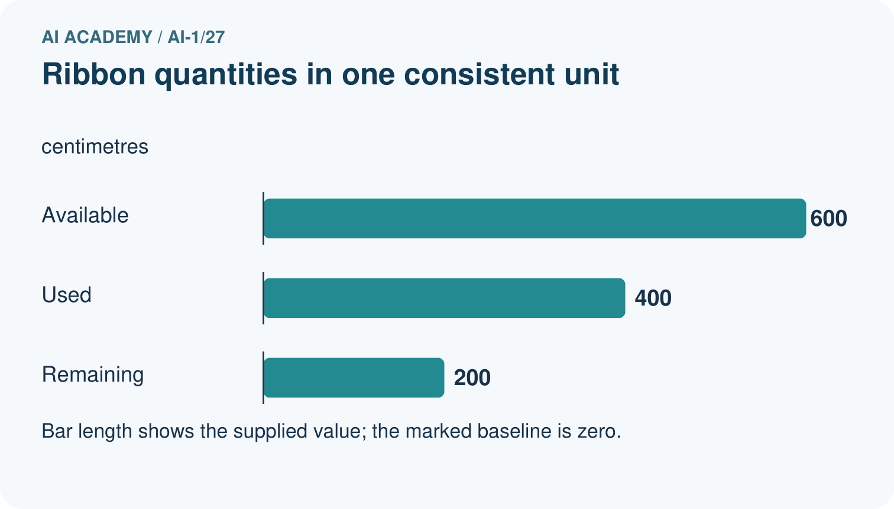
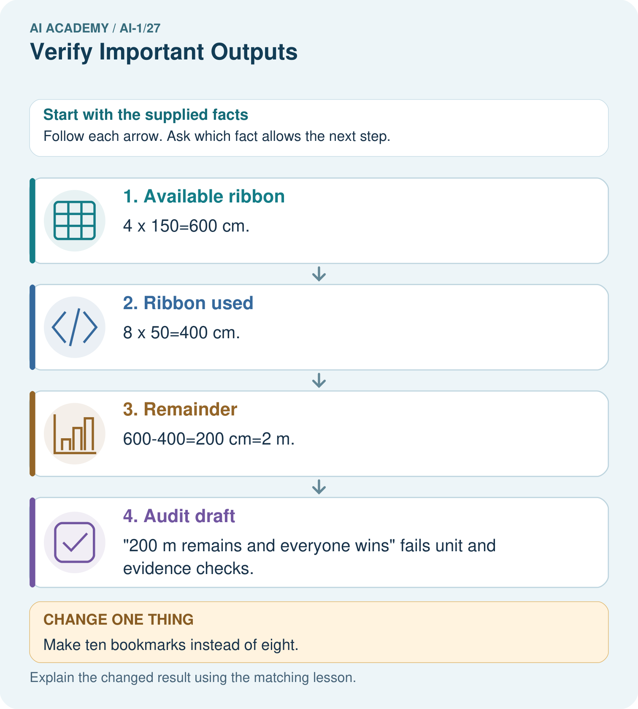
Read the picture one step at a time
Why this result follows
All arithmetic first uses centimetres. Converting only after subtraction avoids mixing units. The record supports available, used and remaining lengths under its no-loss assumption. It does not support a promise about winning. A numerically correct total elsewhere in a draft cannot rescue a wrong unit or an invented claim.
What this example does not establish
Real cutting losses or inaccurate roll lengths would change this toy calculation; the assumption must be declared.
Read the labelled picture: Correct the draft and identify which part needs another source rather than a calculation.
Change one thing: Make ten bookmarks instead of eight. Predict the result before checking the explanation. What remains the same?
Student lesson · 7 of 16
Find and repair a mistake
COMPARE
Same Result, Different Reason
A comparison helps reveal the true concept boundary.
| Case | Evidence | What it shows |
|---|---|---|
| Generated sentence | fluent output | claim, not evidence |
| Zoo care page | direct animal information | possible source |
| Two copied blogs | same origin | not independent |
| Conflicting references | evidence disagrees | report uncertainty |
Repair two tempting claims
CLAIM A Professional wording is evidence of accuracy.
Repair:
CLAIM B The first two agreeing links settle every claim.
Repair:
A closer explanation
A useful correction names the original claim, relevant source, calculation with units and revised conclusion. For example: R lists four 2-metre rolls and twelve 50-centimetre pieces. The pieces use 600 centimetres, or 6 metres; the paper model leaves 2 metres when no cutting loss is included. This preserves the condition on which the result depends.
If the real activity loses ribbon at each cut, the no-loss result cannot simply be reused. Obtain that missing information or label the answer as a model with an explicit assumption. Similarly, if you cannot access a source, mark the claim unresolved and identify what evidence would settle it. Repeating a confident answer is not a new measurement.
Student lesson · 8 of 16
Practise together
GUIDED PRACTICE
Try It, Check It, Explain It
Use support now so you can succeed independently later.

Explain how the picture story demonstrates this idea: Fluent AI output is not evidence; important claims need independent support.
Use a fresh example to explain claim.
Trace a new input → process → output example.
Find and repair the error in: The first two agreeing links settle every claim.
Invent one edge case and name the safe response.
A closer explanation
The claim “600 metres used” conflicts with the stated inputs and calculation. The claim “everyone will enjoy it” is not supported by R or by any supplied enjoyment evidence. That does not establish that nobody will enjoy it. State “not verified from these records” rather than changing an unsupported positive claim into an unsupported negative claim.
Suppose three posters repeat the same number and each copied it from one unverified draft. That is three copies of one claim, not three independent measurements. Follow references back to their origin. A separate check of R and the arithmetic provides more useful evidence than counting copies that repeat the same mistake.
Practise with less help: Repair a unit error
Use workbook W2 for the connected example “Verifying claims and quantities”. First fill the input and rule boxes. Try the middle steps before asking for a hint. After a hint, try the next step yourself.
| Plan | Do | Check |
|---|---|---|
| What is given? Which rule or procedure applies? | Record each intermediate step. | Does the result follow? What remains unknown? |
Explain your trace to a partner. Your partner points to one step to check. Swap roles on the next case. Each person writes their own explanation.
Check your reasoning
Use the worked case for Verifying claims and quantities. Proposed explanation: “A citation proves every nearby claim”. Decide whether this explanation is supported. Point to the step or supplied fact that decides; explain your repair if needed.
Answer on your own before discussion. If you are unsure, say which step you need help with.
Explain the picture
Correct the draft and identify which part needs another source rather than a calculation.
This is supported practice. Keep the separately named independent case for an attempt before feedback.
Student lesson · 9 of 16
Run the investigation
EXPLORER LAB
Two-Source Claim Check
Predict first, test honestly, and explain what the evidence means.

State your prediction before the result is known.
Complete the task: Use a two-source checklist on a generated animal fact.
Keep a normal case and an edge case clearly separated.
Record what happened—even when it does not match your prediction.
Explain the result, one limitation, and the next useful test.
| Case | Prediction | Observed result | What it means |
|---|---|---|---|
| Normal | |||
| Edge |
Plan → try → check
Before trying: what do I expect, and why? While trying: which step could first go wrong? Afterwards: what did I actually observe, and what should change? Keep “not run” if you only traced the procedure.
Student lesson · 10 of 16
Build your understanding
PRACTICE LADDER
Climb from Recall to Defense
Each step asks for a stronger kind of understanding.

RECALL Define claim.
EXPLAIN Fluent AI output is not evidence; important claims need independent support.
TRACE Show the input, process, and output.
DIAGNOSE Repair: Professional wording is evidence of accuracy.
TRANSFER Apply the idea to a new home or classroom case.
CREATE Design one revealing test.
DEFEND Give a claim, evidence, mechanism, limit, and safe action.
Student lesson · 11 of 16
Connect your project
PROJECT
Helpful Classroom Sorter
Build one coherent system across the year, one evidence-based decision at a time.

What real classroom need does this serve?
What information is necessary—and what should stay private?
What happens inside the process?
What normal and edge cases will you test?
When should it say not sure or ask a person?

My project decision:
Evidence for your project
Check sorter calculations with explicit units and verify explanation claims against their actual catalogue evidence.
Student lesson · 12 of 16
Show what you know
MASTERY
Fresh-Case Independent Proof
Complete this after teaching and guided practice have ended.

□ Name or draw the fresh case.
□ Trace input, process, and output.
□ State the conclusion and strongest evidence.
□ Name one limit, failure, missing clue, or fairness/privacy concern.
□ Explain one safe next action or improvement.
Independent evidence:
My level: □ Not yet □ With one hint □ Independently □ I can teach it
Student lesson · 13 of 16
Study a complete case
Week 27 Worked case
Use the supplied details to practise the weekly concept before attempting the independent question. This case extends the illustrated lesson.
The situation
An answer says six groups of four make 28.
The question
Verify independently.
Worked explanation
Six times four is 24. Draw six groups or add four six times. Confident wording does not change arithmetic.
Explain it in your own words
Which detail supports the answer, and why does it matter?
Trace the supplied case visually
Six groups of four make twenty-four
| Evidence or stage | Value or result |
|---|---|
| Group 1 | 4 |
| Group 2 | 4 |
| Group 3 | 4 |
| Group 4 | 4 |
| Group 5 | 4 |
| Group 6 | 4 |
An answer says six groups of four make 28.
Verify independently.
Six times four is 24. Draw six groups or add four six times. Confident wording does not change arithmetic.
Student lesson · 14 of 16
Try a new case independently
Independent case: Audit a new model with mass units
Fictional craft card M states five sealed bags of modelling material at exactly 250 g per bag. Three models each use 300 g, with no other loss. A draft says “M supplies 1250 g; the models use 900 g; 350 kg remains; every model will win a prize.” Check all four claims, show the remaining mass in grams, and explain the status of the prize claim. Use 1 kg = 1000 g.
Attempt this case before feedback. Record any help. Earlier examples below are further practice; a case already practised with feedback cannot establish fresh transfer.
Week 27 Independent application
Close the worked explanation. Apply the idea to this different question without copying.
An assistant says the school library opens at 8, but today's official notice says 9. Which source should guide today's visit? Explain the check.
My answer, with a trace, calculation or supporting evidence
Create and test
Change one relevant detail. Predict the result before testing. Include a boundary or missing-information case when it helps reveal a limit.
My changed input and expected result
Connect to your project
Require human confirmation for important sorter outputs and attach the evidence record used to approve each rule or label.
The evidence I will keep
Your teacher has the independent answer and scoring criteria. Complete the matching workbook week to keep your practice evidence together.
Transfer practice from the original programme
A generated report says 18 of 24 tests passed, so success was 80%. Verify the claim in two ways and write a corrected sentence.
Use feedback to improve
Attempt the independent case before hints. Record whether you worked alone, used a hint or followed a model. After feedback, fix the first unsupported step and explain why it changed. A later check uses a changed case, not a copied answer.
Student lesson · 15 of 16
Your lesson route
Start with this question: A fictional craft sheet calculates ribbon left after making bookmarks.
| By the end, I can | How I will show it |
|---|---|
| Separate an answer into claims and connect each claim to relevant evidence | Explain the deciding step, show a trace or test, and state one limit. |
| Recalculate quantities with consistent units and a reasonableness check | Explain the deciding step, show a trace or test, and state one limit. |
| Report supported, contradicted and unresolved claims without inventing missing evidence | Explain the deciding step, show a trace or test, and state one limit. |
Remember → watch and explain → try with help → investigate → try independently → keep project evidence. Your teacher may spread this lesson across several classes.
Keep your first prediction. Compare it with what the evidence shows and explain any change.
Student lesson · 16 of 16
Finish and return
Close your notes. Explain this goal in your own words: Separate an answer into claims and connect each claim to relevant evidence
If you are unsure, return to the worked picture and explain one arrow. If you are ready, change an input or assumption and justify your prediction.
Save your workbook evidence. At the next review, try a different case before opening your old answer.